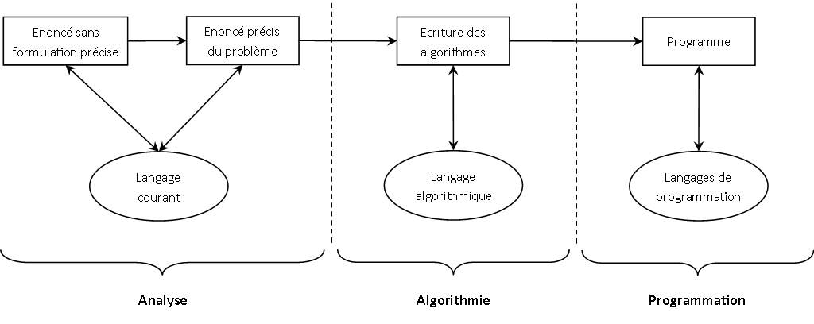

Introduction à l'algorithmie
Objectifs
- Savoir écrire des algorithmes en pseudo code;
- Notamment, des applications aux cas de la géomatique.
Pré-requis
Aucun
Introduction à l'algorithmie
Les grandes phases de la conception d'un programme sont : l'analyse, l'algorithmie et la programmation.

Cette partie du cours se concentre sur la seconde phase : l'écriture d'algorithmes. Les méthodes d'analyse seront étudiées ultérieurement. Pour la programmation, nous nous appuierons sur le langage Python pour illustrer lors de ce cours la dernière phase de réalisation d'un logiciel.
La programmation doit se résumer à transposer dans un langage de programmation des algorithmes déjà écrits lors de la formulation de la solution.
Définition
Un algorithme est l'expression claire et condensée d'un ensemble de traitements à effectuer pour résoudre un problème.
Comme pour les langages de programmation, il existe différents langages d'algorithmie (comme le pseudo-code paar exemple qui est souvent utilisé). Dans ce cours nous utiliserons le langage ADL qui présente l'avantage de posséder une syntaxe très concise et plus abstraite.
Un programme est l'implémentation d'un algorithme dans un langage de programmation donné. L'algorithme se différencie notamment du programme par son indépendance à l'architecture d'une machine : on n'a par exemple pas à se soucier dans un algorithme de la gestion de la mémoire comme on devrait le faire en C.
L'intérêt de passer par une phase d'algorithmie avant de commencer à coder est donc de pouvoir se concentrer sur les méthodes plutôt que sur les spécificités d'un langage de programmation.
Pour écrire des algorithmes, nous utiliserons un pseudo-code, c'est-à-dire des instructions écrites ne dépendant d'aucun langage de programmation.
Variable et affectation
Pour résoudre un problème, un algorithme décrit une suite d'opérations à effectuer. Pour ce faire, nous allons avoir besoin de manipuler des valeurs (résultats de calculs, données saisies par l'utilisateur...). A chaque fois que nous aurons besoin de stocker une information, nous utiliserons une variable.
Une variable permet d'associer un nom à une valeur, cette dernière pouvant évoluer au cours de l'algorithme.
De manière imagée, une variable est une boîte, identifiée à l'aide d'une étiquette (son nom), dans laquelle une donnée (sa valeur) peut être stockée. Bien entendu, un ordinateur n'est pas composé de boîte, ni d'étiquettes : la mémoire de l'ordinateur est composée d'emplacement repéré par leur adresse binaire.
L'instruction qui permet de créer une variable, c'est à dire de lui donner un nom, est appellée la déclaration. En programmation, avec certains langages, il ne suffit pas de donner un nom à une variable pour pouvoir la déclarer : il faut également préciser le type de données qu'elle contiendra. Cet aspect ne concerne pas l'algorithmie.
Le nom de la variable est composé de lettres majuscules ou minuscules (la distinction est respectée), des chiffres et le caractère blanc souligné. Il ne peut commencer que par une lettre. Le caractère blanc souligné ne peut être écrit deux fois consécutivement, ni terminer le nom de variable. On parle également d'identificateur pour le nom de variable.
L'affectation est, quand à elle, l'opération consistant à associer une valeur à une variable.
On utilisera comme symbole de l'affectation le symbole =
Exemple : j'affecte la valeur 4 à la variable mon_entier
Opérateurs et expressions
Un opérateur est un signe qui relie deux valeurs pour produire un résultat.
Assez naturellement les opérateurs dépendent du types des valeurs sur lesquels ils s'appliquent : diviser des chaînes de caractères n'a pas de sens par exemple.
Nous ne présenterons dans ce paragraphe que les opérateurs de base, déjà connus de tous, sans rechercher l'exhaustivité. Nous introduirons petit à petit dans la suite du cours les différents opérateurs qui nous seront utiles.
- opérateurs arithmétiques : + - * / ^ % (modulo)
- comparateurs : < <= = != >= >
- opérateurs logiques : ET OU NON
- opérateur de concaténation : &
Une expression représente une succession d'opérations sur des valeurs. Le résultat de l'expression équivaut à une seule valeur.
Exemple :
- 4 + 3
- "bla" & "bla" & "bla"
Instructions
Une instruction désigne une étape d'un algorithme.
L'affectation est un exemple d'instruction : a = 4. Les boucles ou tests que nous étudierons dans les prochaines parties sont d'autres types d'instructions de base qui sont fréquement utilisées en algorithmie.
Considérons l'algorithme suivant :
Il est composé de 3 instructions : 2 affectations et une opération qui permet d'effectuer la somme des deux variables a et b pour l'affecter à une troisième (c).
Nous entendrons parfois parler de bloc d'instructions. Il s'agit simplement de plusieurs instructions qui sont exécutées successivement. Un algorithme est ainsi constitué d'un ou plusieurs blocs d'instructions.
Boucles
La notion de boucle est fondamentale en algorithmie.
Une boucle permet de répéter plusieurs fois un bloc d'instructions.
Imaginons que nous voulions ajouter 1 aux valeurs contenues dans un tableau T de trois éléments (T0, T1 et T2). L'algorithme naïf serait le suivant :
T0 = T0 + 1; T1 = T1 + 1; T2 = T2 + 1;
Nous recopions en fait trois fois quasiment la même chose, ce qui est inutile et devriendrait très fastidieux si nous devions travailler sur un tableau avec 10000 éléments...
Il est alors plus élégant d'abstraire un peu la méthode en écrivant : Ti = Ti + 1 et en faisant varier la valeur de i qui est la seule chose qui change dans les opérations à réaliser.
Ce faisant, nous utilisons une boucle sur i, qui est alors appellée variable muette.
Remarque : nous pouvons appeler cette variable muette j, k, l ou n'importe quoi d'autre; la lettre i est habituellement choisie car, en fait, il s'agit d'un itérateur.
Boucles avec bornes et pas
- i est le compteur de la boucle
- bi la borne initiale
- bf la borne finale
- p le pas
Compteur, bornes et pas sont de type entier. Les bornes et le pas peuvent être peuvent être des identificateurs, des constantes ou encore des expressions.
A l'entrée dans la boucle, i prend la valeur de la borne initiale bi et à chaque passage dans la boucle, le compteur i est incrémenté de la valeur du pas p. Lorsque i atteint une valeur strictement supérieure à la borne finale bf, le programme sort de la boucle.
Dans le langage courant, on parle plus volontier de boucle for. Elle est présentée comme la plus simple, car c'est celle dans laquelle sont précisés la totalité des bornes ainsi que le pas d'incrément (le nombre qui s'ajoute à la variable muette entre deux étapes).
Lorsque la pas est égal à 1, ce qui est le plus courant, il n'est pas obligatoire de l'écrire.
Si nous retournons à notre exemple initial, nous pouvons maintenant simplement écrire :
Note : une fois sorti de la boucle, le compteur n'a plus aucune valeur. Il est ainsi possible d'enchaîner deux boucles avec un compteur nommé, dans les deux cas, i sans que cela pose de problème.
Boucles tant que
La boucle tant que, ou boucle while, permet d'éxécuter un bloc d'instructions tant qu'une condition est réalisée. Elle comporte une condition qui est testée avant chaque passage dans la boucle (y compris lors du premier passage).
Par exemple :
ajoute 1 à la valeur de la variable n à chaque passage dans la boucle tant que la valeur de n est inférieur à 5. Ainsi, à la sortie de la boucle, n vaut 5.
Sorties de boucle
Pour des raisons de simplification des algorithmes (pour éviter de parcourir un bloc d'inscruction si cela n'a pas d'intérêt dans la résolution du problème), il est utile de disposer d'opérateurs de débranchement qui permettent de passer directement à la valeur suivante de l'itérateur ou de sortir directement de la boucle en cours.
Ces deux fonctionnalité des boucles sont notées :
- continue, qui permet de passer à la valeur suivante;
- break, qui permet de sortir de la boucle, les expressions conservent leurs valeurs, et on continue l'exécution du programme à partir de la première expression qui suit la fin de boucle courante (c'est à dire à la suite de l’accolade fermante).
Boucles ensembliste
La boucle ensembliste est utilisé pour extécuter un bloc d'instructions sur toutes les entités d'un ensemble d'éléments.
Par exemple, si premiers est l'ensemble des nombres premiers inférieurs à 100, l'algorithme suivant calcule la somme de ses nombres premiers :
La boucle ensembliste est essentiellement utilisée pour la gestion des listes que nous étudierons ultérieurement.
Equivalences de boucles
Nous remarquerons qu'un algorithme écrit avec une boucle avec borne et pas pourra également l'être avec une boucle tant que.
Est équivalent, avec une boucle tant que à :
De manière plus générale, il sera souvent possible d'écrire un algorithme en utilisant l'un ou l'autre des types de boucle. Il arrivera qu'un type de boucle soit plus adapté dans un contexte particulier.
Combinaisons de boucles
Si les boucles peuvent être imbriquées les unes dans les autres ou successives, elles ne peuvent jamais être croisées.
Par exemple, pour calculer la somme des éléments d'une matrice (notée mat, de n lignes et p colonnes, mat[i][j] étant l'élément à la i-ème ligne et j-ième colonne), nous écrirons l'algorithme suivant :
Les tests
Nous étudierons dans ce paragraphe les tests "simples" et les tests à choix multiples qui sont deux structures alternatives.
Le test simple
Imaginons que nous voulions écrire un programme permettant de déterminer si un nombre entier est pair, par exemple pour savoir si une adresse se situe du côté gauche ou droit d'une rue. La structure générale du programme serait la suivante :
Précisons que les blocs d'instructions des parties si et sinon peuvent être vides (l'un ou l'autre, les deux vides n'ayant aucun intérêt).
Par exemple, si nous souhaitons déterminer le maximum de deux variables A et B pour le mettre dans une variable max, nous pouvons écrire l'algorithme suivant :
Le test à choix multiple
Il est parfois nécessaire d'évaluer plusieurs cas pour déterminer l'action à effectuer. Immaginons par exemple vouloir écrire un programme calculant le nombre de jours d'un mois donné. La structure générale du programme serait la suivante :
Si le numéro du mois est 1, 3, 5, 7, 8, 10 ou 12 alors
le mois compte 31 jours
Fin si
Si le numéro du mois est 4, 6, 9, 11 alors
le mois compte 30 jours
Fin si
Si le numéro du mois est 2 alors
Si l'année est bisextile alors
le mois compte 29 jours
Sinon
le moins compte 28 jours
Fin si
Fin si
Si le numéro de mois est supérieur à 12 alors
il y a un problème
Fin si
Il est tout à fait possible d'enchaîner les conditions comme nous l'avons fait ci-dessus, mais cela n'est pas très élégant. A la place, on préférera utiliser la structure du test à choix multiples :
Les fonctions
Lors de l'écriture de programmes, nous allons être confronté à une réalité : les mêmes problèmes reviennent avec une récurrence importante. Aussi afin de ne pas avoir à ré-écrire les mêmes portions de code à chaque fois, nous allons utiliser une structure permettant de faire référence facilement à tout un ensemble d'instructions : les fonctions.
Nous verrons que l'organisation des algorithmes en fonctions facilite également leur compréhension : au lieu d'avoir un bloc contenant de nombreuses instructions, nous manipulerons plusieurs blocs d'instructions réalisant chacun une tache très spécifique.
Définition
Une fonction est une séquence d'instructions, identifiée par un nom, et fonctionnnant à l'aide paramètres.
Une fonction est composée de deux parties : une en-tête, définissant le nom et les paramètres, et un corps, décrivant ce qu'effectue l'algorithme.
La syntaxe pour l'appel d'une fonction est la suivante :Une fonction peut éventuellement retourner une valeur. On utilisera alors l'instruction Retourner :
Retourner correspond à la fin de la fonction. Toutes les instructions situées dans la fonction mais après l'instruction Retourner ne seront pas executées.
Remarque : on pourra parler de procédure pour une fonction ne retournant aucune valeur, et de fonction (tout court) pour celles retournant une valeur.
Récursivité
Un algorithme est dit récursif s'il est défini à partir de lui même.
On prendra pour exemple la fonction qui calcule la somme des n premiers entiers. En mode itératif, elle s'écrit :
En mode récursif, on l'écrira :
Fonction somme_recursive(n)
Si n = 0
Retourner 0
Sinon
res = n + somme_recursive(n-1)
Retourner res
Fin si
Fin fonction
Pour bien se convaincre que ça marche (car le fonctionnement est contre-intuitif), on peut dérouler les étapes réalisées par la fonction.
En faisant cela, on remarque que la condition d'arrêt des appels récursifs est primordiale, car sinon la fonction s'exécuterait à l'infini.
La récursivité est similaire aux démonstrations par récurrence : la condition d'arrêt correspond au cas trivial (initiation), et la partie recursive à l'hérédité.